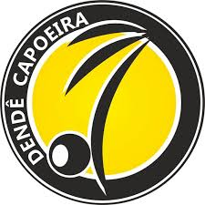
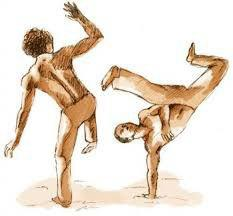
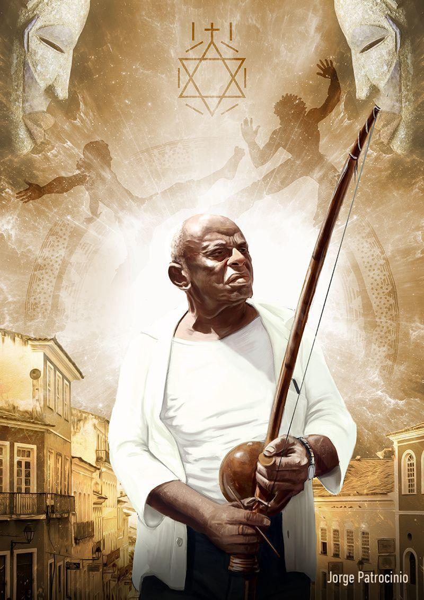
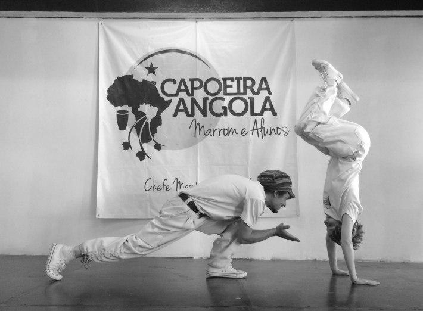
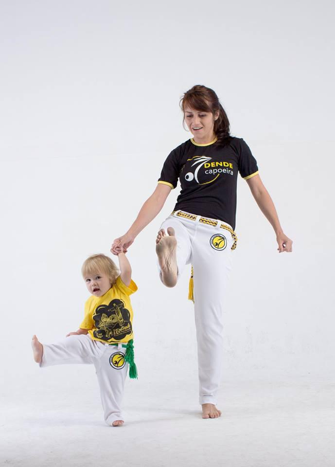

Dendê Капоэйра Полтава
Капоэйра. История
Достоверные сведения о капоэйра начинаются с 18 века, но,
фактически, она зародилась несколько ранее. Согласно
общепринятой версии, капоэйра возникла в Южной Америке
благодаря чернокожим рабам, которых португальцы
привозили из других колоний – Анголы, Мозамбика.

Вследствие жестокого обращения бразильских рабовладельцев
часть рабов бежала в сельву, где африканская религия
и культура встретилась с индейской. Беглые селились
киломбуш (ед.ч. – киломбу) – «вольных городах», из
субкультуры которых и начала своё распространение капоэйра.
По разным сведениям, капоэйра ведёт своё происхождение от:
• субкультуры африканского национального танца.
Первоначально борьба в ней отстутствовала, этот уклон
появился уже позднее, на территории Бразилии.
• африканского ритуального боевого танца «нголо» («n’golo»),
являвшегося неотъемлемым атрибутом обряда инициации
в южных районах Анголы.
Развитие капоэйры в далекие временанеразрывно связано
с именем легендарного героя – Зумби, который стал
для народа Бразилии символом сопротивления.
Зумбидус Палмарис возглавлял один из крупнейших
киломбу – Палмарис, который просуществовал в условиях
правительственной блокады около семидесяти лет.
Стили в капоэйре

Капоэйра режионал
В 1932 г. открылась первая в истории официальная
школа капоэйры. Её основателем был Мэстрэ Бимба
(Мануэльдус Рейс Машаду). Местре Бимба основал
новый стиль капоэйра, назвав его «Лута Режионал Байана»
или просто «Капоэйра Режионал».
Он систематизировал наработанный опыт различных школ
и улучшил технику преподавания.
Придуманные им «8 последовательностей Бимбы»
или же просто «последовательности» по сей день
считаются азбукой обучениякапоэйристов,
практикующих режионал и некоторые
другие направления современной капоэйры.
Бимба разработал методики преподавания капоэйры,
комплексы движений, ударов и контрударов руками и ногами.
Капоэйра до Бимбы и после него – это два совершенно разных
подхода к теории и практике этого боевого единоборства.
Капоэйра Ангола

Вторым человеком, сильно повлиявшим на современную капоэйру,
был Мэстрэ Пастинья (Висенте Феррейра Пастинья).
Его школа Академия «Капоэйра Ангола» была открыта в 1941 году.
Стиль мастера Пастиньи так и называется «Ангола»,
в честь места на Африканском континенте, откуда
привозили рабов (по другой теории это название происходит
от слова «нголо» (n’golo) — ритуального танца народов Африки).
Если Местре Бимба рассматривал капоэйру как борьбу и
рассматривал её только с боевой позиции, то Местре Пастинья
всегда подчеркивал её традиционно ритуальный
и игровой характер.
Капоэйра контемпоранеа
Термин «Контемпоранеа» используется для групп,
которые практикуют стиль Ангола,
одновременно модернизируя его.
Этот стиль является очень спорным, так как многие
современные капоэйристы утверждают, что нельзя
смешивать стили Ангола и Режионал, что ученик
должен практиковать лишь один из них для того,
чтобы полностью принять форму игры.
Другие утверждают, что капоэйрист должен иметь
навыки как традиционной, так и современной капоэйры
и поддерживают тренировки в обоих стилях одновременно.
В целом стиль Контемпоранеа является предметом
множества споров среди капоэйристов.
Название «Контемпоранеа» также применяется к различным
группам, которые не связывают себя ни с Местре Бимба,
ни с Местре Пастинья.
На протяжении последних нескольких лет различные
философии современной капоэйры выражались в создании
различных школ, в частности в Северной Америки,
которые создают и продолжают развивать их
индивидуальную школу современного искусства.
Это стало определяющей характеристикой многих школ,
вплоть до того, что опытный ученик порой может определить,
из какой школы происходит его соперник, судя лишь
по стилю игры капоэйриста.

Капоэйра для детей
Капоэйра для детей - это координация, акробатика, сальто,
кувырки, высокие махи и удары ногами и руками, — всё это
способствует формированию сильного мышечного корсета,
реакции.
Дети учатся взаимодействию с другими детьми
посредством контакта. Более того, так как капоэйра учит
избегать агрессии и прямого столкновения, детишки несут
полученные знания и во взрослую жизнь.
Капоэйра для детей - это замечательный вариант для тех,
кто ищет универсальное спортивно-развивающее занятие
для своего ребенка.
Разнообразие движений в капоэйре
не позволит ребенку заскучать на тренировке, а веселый
и динамичный характер занятий привлекает с первого раза!
Капоэйра для детей это:
• развитие гибкости и пластики;
• общая физическая подготовка;
• элементы боевых навыков и самозащиты;
• развитие музыкального слуха и чувства ритма;
• веселый досуг и новые друзья
Адрес: г. Полтава, ул. Великотырновская, 30, фитнес-клуб «Атлетик» (остановка «Сады-1»)